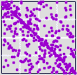

| Observing that the market tends to fluctuate most often between
+2.5% and -2.5%, as a first experiment Thornton
looked at daily changes in stock prices and used zero-centered bins
with these bin boundaries |
| B3: the price increases by > 2.5% its previous value |
| B2: the price remains unchanged |
| B1: the price decreases by < -2.5% its previous value |
|
| Here are the driven IFS |
|
 |
|
| Citigroup |
American International |
General Electric |
|
 |
|
| Dell |
Sonus Networks |
Qwest |
|  |
|
|
| Tyson Foods |
Colgate-Palmolive |
Lucent |
|
| Note that for Citigroup, AI, GE, Tyson, and Colgate-Palmolive, the predominant feature
is strong motion along the 2-3 diagonal, indcating most changes are
within 2.5% of the previous price. |
| Another feature, especially strong in the GE graph, is the absence of points
along the 1-4 diagonal. Although there are points in address 1 and 4
(even in address 11 and 44), there are very few consecutive moves of > +2.5%
followed by < -2.5%, and vice versa. |
| Contrast this with Sonus, where most of the activity in along the 1-4 diagonal,
indicating relatively wild swings in closing price. The heavy cluster of points
in corner 1 does not speak of a successful stock. |
| Roughly speaking, the older economy companies - Citigroup, Tyson, Colgate-Palmolive, GE,
and AIG - have stronger 2-3 diagonals, indicating less volatile behavior. |